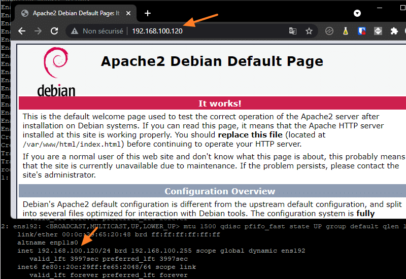
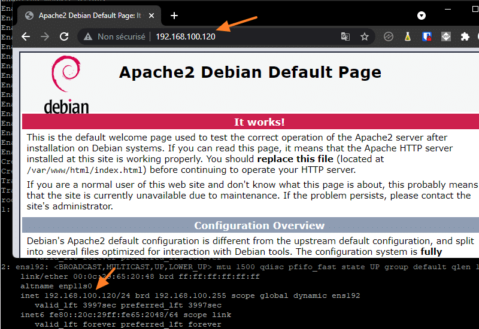
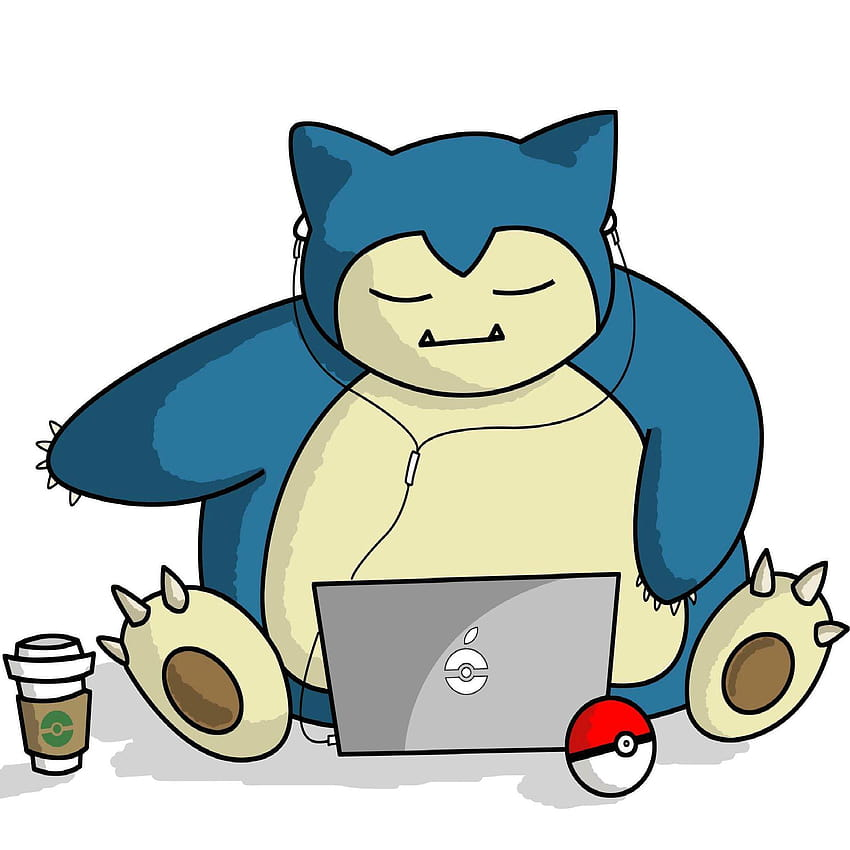
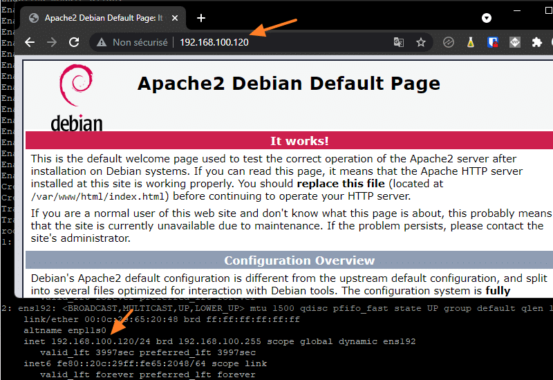

Galerie
 

Je m'appelle Rayan. Étudiant en BTS SIO - SISR (enfin j'espere) orienté réseaux et cybersécurité. Objectif à moyen terme : licence Réseaux & Télécom, puis master en cyber. Je documente mes apprentissages (Windows/Linux, Virtualisation, SQL) et je construis un petit portfolio de sites et labs.
Quelques réalisations ou travaux récents :
